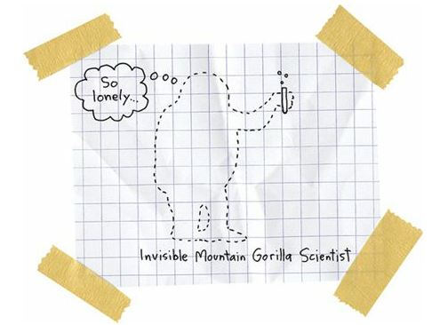

Red Versus White
You probably think I’ve completely fallen in love with white people and that I don’t see anything good in Indians.
Well, that’s false.
I love my big sister. I think she’s double crazy and random.
Ever since she moved, she’s sent me all these great Montana postcards. Beautiful landscapes and beautiful Indians. Buffalo. Rivers. Huge insects.
Great postcards.
She still can’t find a job, and she’s still living in that crappy little trailer. But she’s happy and working hard on her book. She made a New Year’s resolution to finish her book by summertime.
Her book is about hope, I guess.
I think she wants me to share in her romance.
I love her for that.
And I love my mother and father and my grandma.
Ever since I’ve been at Reardan, and seen how great parents do their great parenting, I realize that my folks are pretty good. Sure, my dad has a drinking problem and my mom can be a little eccentric, but they make sacrifices for me. They worry about me. They talk to me. And best of all, they listen to me.
I’ve learned that the worst thing a parent can do is ignore their children.
And, trust me, there are plenty of Reardan kids who get ignored by their parents.
There are white parents, especially fathers, who never come to the school. They don’t come for their kids’ games, concerts, plays, or carnivals.
I’m friends with some white kids, and I’ve never met their fathers.
That’s absolutely freaky.
On the rez, you know every kid’s father, mother, grandparents, dog, cat, and shoe size. I mean, yeah, Indians are screwed up, but we’re really close to each other. We KNOW each other. Everybody knows everybody.
But despite the fact that Reardan is a tiny town, people can still be strangers to each other.
I’ve learned that white people, especially fathers, are good at hiding in plain sight.
I mean, yeah, my dad would sometimes go on a drinking binge and be gone for a week, but those white dads can completely disappear without ever leaving the living room. They can just BLEND into their chairs. They become their chairs.
So, okay, I’m not all goofy-eyed in love with white people, all right? Plenty of the old white guys still give me the stink eye just for being Indian. And a lot of them think I shouldn’t be in the school at all.
I’m realistic, okay?
I’ve thought about these things. And maybe I haven’t done enough thinking, but I’ve done enough to know that it’s better to live in Reardan than in Wellpinit.
Maybe only slightly better.
But from where I’m standing, slightly better is about the size of the Grand Canyon.
And, hey, do you want to know the very best thing about Reardan?
It’s Penelope, of course. And maybe Gordy.
And do you want to know what the very best thing was about Wellpinit?
My grandmother.
She was amazing.
She was the most amazing person in the world.
Do you want to know the very best thing about my grandmother?
She was tolerant.
And I know that’s a hilarious thing to say about your grandmother.
I mean, when people compliment their grandmothers, especially their Indian grandmothers, they usually say things like, “My grandmother is so wise” and “My grandmother is so kind” and “My grandmother has seen everything.”
And, yeah, my grandmother was smart and kind and had traveled to about 100 different Indian reservations, but that had nothing to do with her greatness.
My grandmother’s greatest gift was tolerance.
Now, in the old days, Indians used to be forgiving of any kind of eccentricity. In fact, weird people were often celebrated.
Epileptics were often shamans because people just assumed that God gave seizure-visions to the lucky ones.
Gay people were seen as magical, too.
I mean, like in many cultures, men were viewed as warriors and women were viewed as caregivers. But gay people, being both male and female, were seen as both warriors and caregivers.
Gay people could do anything. They were like Swiss Army knives!
My grandmother had no use for all the gay bashing and homophobia in the world, especially among other Indians.
“Jeez,” she said. “Who cares if a man wants to marry another man? All I want to know is who’s going to pick up all the dirty socks?”
Of course, ever since white people showed up and brought along their Christianity and their fears of eccentricity, Indians have gradually lost all of their tolerance.
Indians can be just as judgmental and hateful as any white person.
But not my grandmother.
She still hung on to that old-time Indian spirit, you know?
She always approached each new person and each new experience the exact same way.
Whenever we went to Spokane, my grandmother would talk to anybody, even the homeless people, even the homeless guys who were talking to invisible people.
My grandmother would start talking to the invisible people, too.
Why would she do that?
“Well,” she said, “how can I be sure there aren’t invisible people in the world? Scientists didn’t believe in the mountain gorilla for hundreds of years. And now look. So if scientists can be wrong, then all of us can be wrong. I mean, what if all of those invisible people ARE scientists? Think about that one.”
So I thought about that one:

After I decided to go to Reardan, I felt like an invisible mountain gorilla scientist. My grandmother was the only one who thought it was a 100 percent good idea.
“Think of all the new people you’re going to meet,” she said. “That’s the whole point of life, you know? To meet new people. I wish I could go with you. It’s such an exciting idea.”
Of course, my grandmother had met thousands, tens of thousands, of other Indians at powwows all over the country. Every powwow Indian knew her.
Yep, my grandmother was powwow-famous.
Everybody loved her; she loved everybody.
In fact, last week, she was walking back home from a mini powwow at the Spokane Tribal Community Center, when she was struck and killed by a drunk driver.
Yeah, you read that right.
She didn’t die right away. The reservation paramedics kept her alive long enough to get to the hospital in Spokane, but she died during emergency surgery.
Massive internal injuries.
At the hospital, my mother wept and wailed. She’d lost her mother. When anybody, no matter how old they are, loses a parent, I think it hurts the same as if you were only five years old, you know? I think all of us are always five years old in the presence and absence of our parents.
My father was all quiet and serious with the surgeon, a big and handsome white guy.
“Did she say anything before she died?” he asked.
“Yes,” the surgeon said. “She said, ‘Forgive him.’ ”
“Forgive him?” my father asked.
“I think she was referring to the drunk driver who killed her.”
Wow.
My grandmother’s last act on earth was a call for forgiveness, love, and tolerance.
She wanted us to forgive Gerald, the dumb-ass Spokane Indian alcoholic who ran her over and killed her.
I think my dad wanted to go find Gerald and beat him to death.
I think my mother would have helped him.
I think I would have helped him, too.
But my grandmother wanted us to forgive her murderer.
Even dead, she was a better person than us.
The tribal cops found Gerald hiding out at Benjamin Lake.
They took him to jail.
And after we got back from the hospital, my father went over to see Gerald to kill him or forgive him. I think the tribal cops might have looked the other way if my father had decided to strangle Gerald.
But my father, respecting my grandmother’s last wishes, left Gerald alone to the justice system, which ended up sending him to prison for eighteen months. After he got out, Gerald moved to a reservation in California and nobody ever saw him again.
But my family had to bury my grandmother.
I mean, it’s natural to bury your grandmother.
Grandparents are supposed to die first, but they’re supposed to die of old age. They’re supposed to die of a heart attack or a stroke or of cancer or of Alzheimer’s.
THEY ARE NOT SUPPOSED TO GET RUN OVER AND KILLED BY A DRUNK DRIVER!
I mean, the thing is, plenty of Indians have died because they were drunk. And plenty of drunken Indians have killed other drunken Indians.
But my grandmother had never drunk alcohol in her life. Not one drop. That’s the rarest kind of Indian in the world.
I know only, like, five Indians in our whole tribe who have never drunk alcohol.
And my grandmother was one of them.
“Drinking would shut down my seeing and my hearing and my feeling,” she used to say. “Why would I want to be in the world if I couldn’t touch the world with all of my senses intact?”
Well, my grandmother has left this world and she’s now roaming around the afterlife.